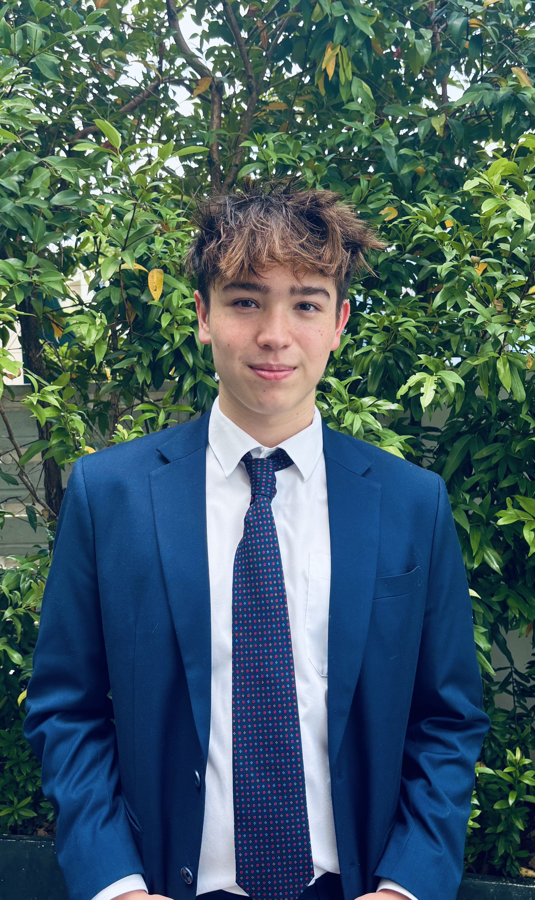

I noticed AI kept agreeing with me. I wanted to know if the way you phrase a false claim changes whether a model catches it.
Current AI safety benchmarks systematically undercount sycophantic failures by missing the most natural way people phrase false claims.
I heard Sichuan dialect everywhere in Chengdu's hip-hop clubs. Then I opened the lyrics and it wasn't there.
Chinese characters encode meaning, not pronunciation. Any corpus-based study of dialect in Chinese music will systematically miss what listeners actually hear.
Jane Street broke a trained neural network into 97 pieces and posted it on Hugging Face. We decided to put it back together.
Detailed write-ups and visuals for each project on LinkedIn.
I coded 40 Chengdu rap songs looking for Sichuan dialect. Found almost none on the page.
June 2026 · Medium
What a flight simulator utilization analysis at Boeing taught me about professional communication.
December 2025 · Medium
Analyzed flight simulator utilization data across three platforms. Identified scheduling patterns and revenue gaps. Presented findings to senior training management.
~8-person student group producing macro and quantitative research on APAC markets. Policy divergence, FX carry, equity factor models, volatility regimes.
Designed the Eco-Scouts discovery program for an ASEAN eco-startup.
200 hours of Mandarin. HSK 4. 800+ characters. Fieldwork for the linguistics study.